无文字生态瓶游戏素材
66 个独立 SVG。动态状态与家具布局以游戏源码为准。
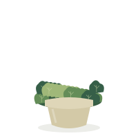
柜中盆栽 / potted-moss.svg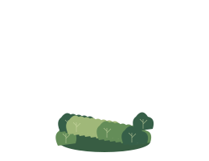
瓶内植物 / plant-moss-healthy.svg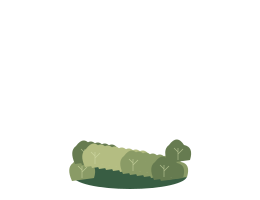
瓶内植物 / plant-moss-stressed.svg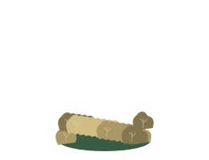
瓶内植物 / plant-moss-struggling.svg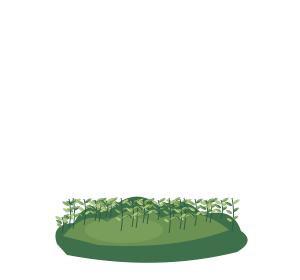
植物交错分层 / plant-moss-back.svg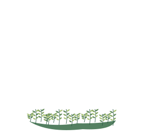
植物交错分层 / plant-moss-front.svg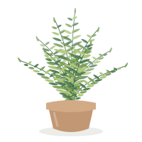
柜中盆栽 / potted-fern.svg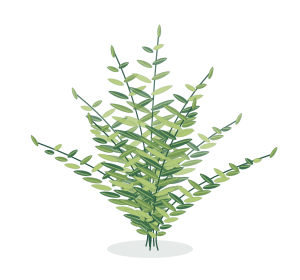
瓶内植物 / plant-fern-healthy.svg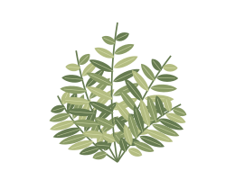
瓶内植物 / plant-fern-stressed.svg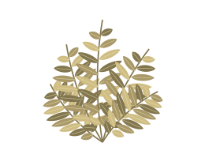
瓶内植物 / plant-fern-struggling.svg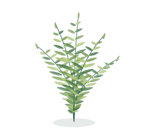
植物交错分层 / plant-fern-back.svg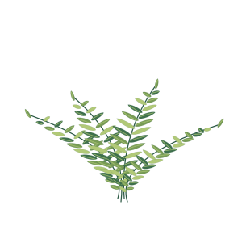
植物交错分层 / plant-fern-front.svg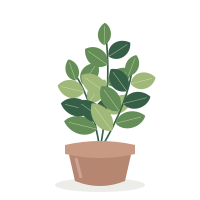
柜中盆栽 / potted-foliage.svg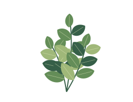
瓶内植物 / plant-foliage-healthy.svg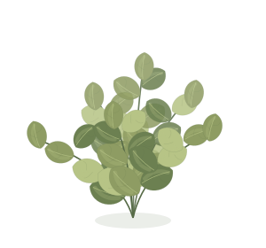
瓶内植物 / plant-foliage-stressed.svg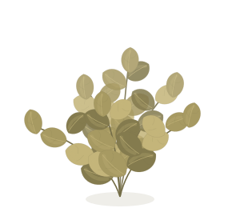
瓶内植物 / plant-foliage-struggling.svg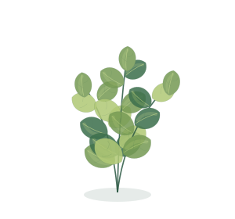
植物交错分层 / plant-foliage-back.svg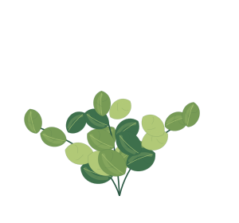
植物交错分层 / plant-foliage-front.svg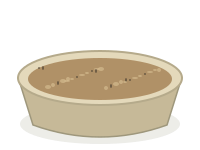
土壤盘 / soil-tray-sandy.svg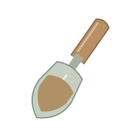
铲子 / trowel-sandy.svg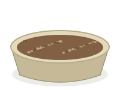
土壤盘 / soil-tray-regular.svg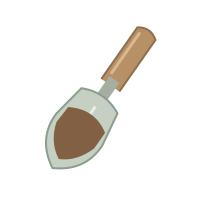
铲子 / trowel-regular.svg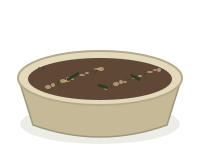
土壤盘 / soil-tray-humus.svg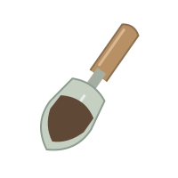
铲子 / trowel-humus.svg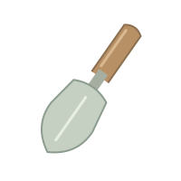
铲子 / trowel-empty.svg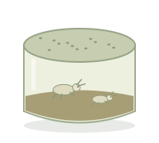
昆虫盒 / insect-box-springtails.svg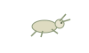
昆虫 / insect-springtails.svg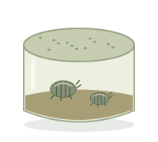
昆虫盒 / insect-box-woodlice.svg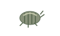
昆虫 / insect-woodlice.svg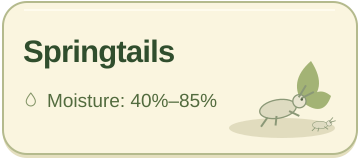
靠罐信息卡 / card-springtails.svg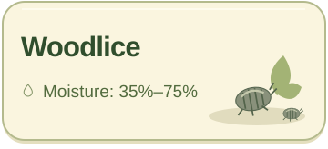
靠罐信息卡 / card-woodlice.svg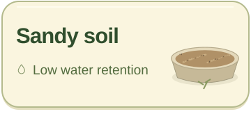
靠罐信息卡 / card-sandy.svg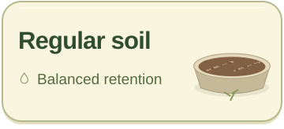
靠罐信息卡 / card-regular.svg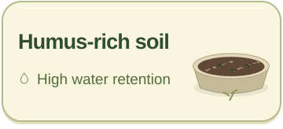
靠罐信息卡 / card-humus.svg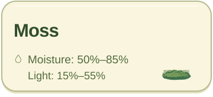
靠罐信息卡 / card-moss.svg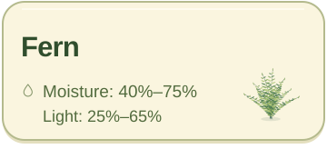
靠罐信息卡 / card-fern.svg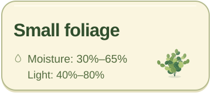
靠罐信息卡 / card-foliage.svg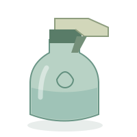
喷水壶 / water-sprayer.svg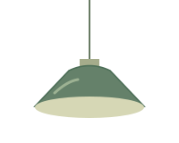
单盏顶灯亮度状态 / pendant-0.svg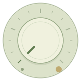
亮度旋钮状态 / dimmer-0.svg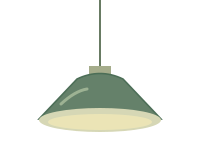
单盏顶灯亮度状态 / pendant-50.svg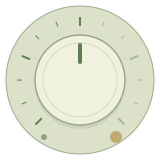
亮度旋钮状态 / dimmer-50.svg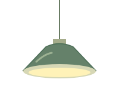
单盏顶灯亮度状态 / pendant-100.svg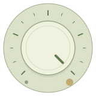
亮度旋钮状态 / dimmer-100.svg交互符号 / symbol-undo.svg交互符号 / symbol-reset.svg交互符号 / symbol-play.svg交互符号 / symbol-pause.svg交互符号 / symbol-next.svg交互符号 / symbol-check.svg交互符号 / symbol-close.svg交互符号 / symbol-drop.svg交互符号 / symbol-sun.svg交互符号 / symbol-hand.svg交互符号 / symbol-leaf.svg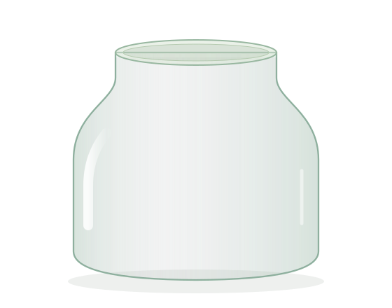
生态瓶场景 / jar-empty.svg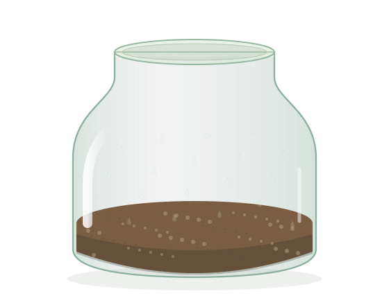
生态瓶场景 / jar-soil.svg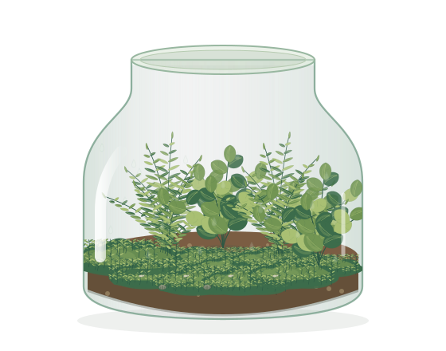
生态瓶场景 / jar-planted.svg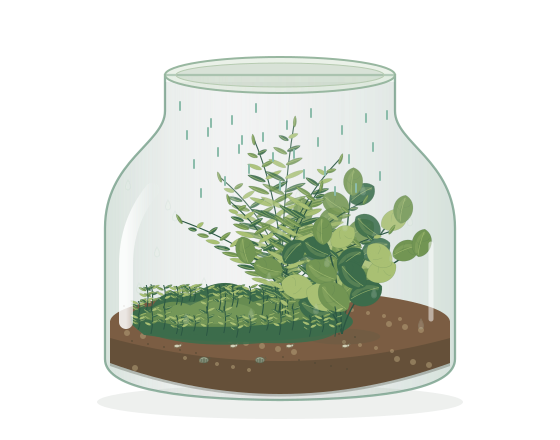
生态瓶场景 / jar-watering.svg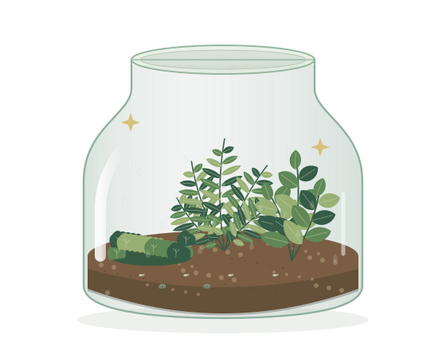
生态瓶场景 / jar-week-complete.svg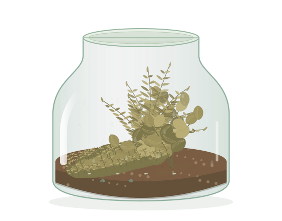
生态瓶场景 / jar-struggling.svg家具参考 / furniture-plant-cabinet.svg家具参考 / furniture-insect-shelf.svg家具参考 / furniture-soil-tray.svg环境参考 / environment-window.svg环境参考 / environment-workbench.svg